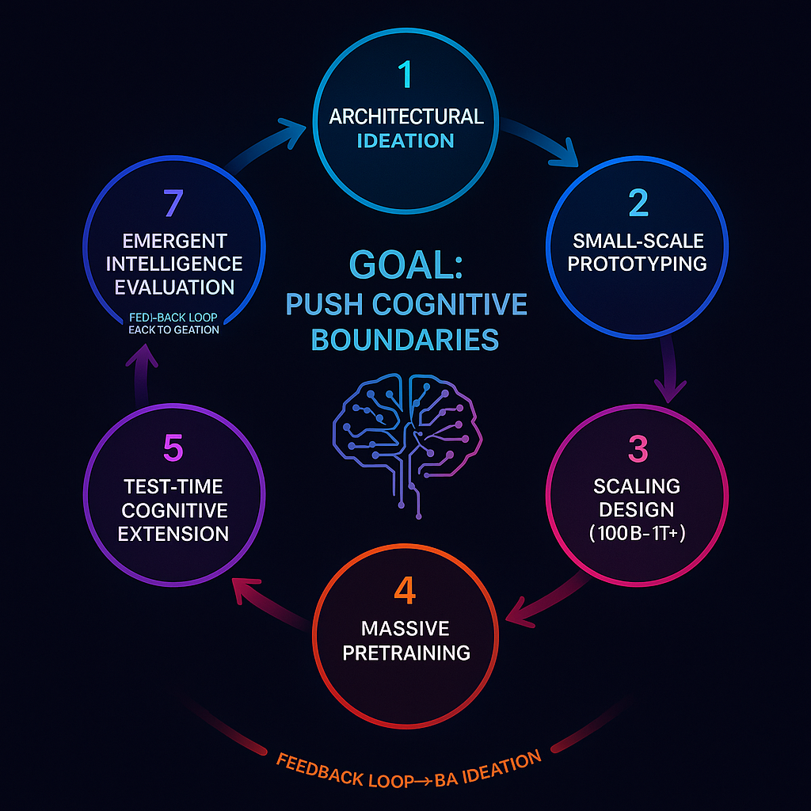

📘
The Role of a Research Engineer in Frontier AI Development

(Intro Section – feel free to paste and modify as we go)
Modern frontier AI labs such as OpenAI, xAI, DeepMind, and Anthropic are built around a core engine: the Research Engineer (RE). While the public often imagines “AI researchers” as purely academic whitepaper authors, the reality is that the systems powering GPT-5, Gemini, Claude, and Grok are designed, trained, scaled, stress-tested, and evolved primarily by Research Engineers.
⸻
⸻
⸻
⸻
A Research Engineer is not merely “an implementer of models” — they are:
✅ A capabilities-driven experimentalist
✅ A model architect and cognitive systems builder
✅ A scientific engineer who iterates toward intelligence breakthroughs
✅ A bridge between theory, scaled training, and emergent capability
✅ A Research Engineer’s core mission:
Design, train, and optimize the raw intelligence of the model before it is aligned, filtered, or productized.
⸻
⸻
⸻
✅ Their scope includes two major domains:
Pretraining (Core Intelligence Creation)
Research Engineers handle all work that leads to a powerful base model:
✔ Architecture innovation
✔ Prototype scaling + ablations
✔ Building the final large-scale architecture
✔ Running and monitoring massive pretraining runs
✔ Early emergent capability analysis
✔ Scaling law evaluation
✔ Adjusting training dynamics to maximize general intelligence
This phase answers: “How do we build the smartest possible base model?”
⸻
⸻
⸻
Capability Optimization (Post-pretraining, pre-alignment work)
After the base model finishes general pretraining, REs further sharpen its raw intelligence (without adding moral rules or safety bias) by:
✔ Domain-specific fine-tuning (math, code, physics, reasoning depth)
✔ Extending chain-of-thought, tool-use, or multi-step reasoning
✔ Integrating advanced test-time compute frameworks (search, debate, reflection)
✔ Optimizing for abstraction, consistency, planning, causality, simulation fidelity
✔ Stress-testing cognitive depth and coherence
✔ Introducing long-term memory or meta-learning mechanisms
This phase answers: “How do we turn a smart base model into a deeply capable thinker before alignment constraints reduce its behavior space?”
⸻
⸻
⸻
❌ What REs usually
do not
do:
✘ Moral alignment or ethical steering
✘ RLHF safety shaping
✘ Refusal tuning / red teaming
✘ Preference optimization
✘ Bias / toxicity suppression
✘ Productization (chatbot packaging, UI, persona injection)
✘ Compliance guardrails and policy filtering
These are typically handled later by alignment engineers, post-training teams, and product ML engineers, depending on the lab.
⸻
⸻
⸻
⸻
REs own the core stages where intelligence actually emerges — from architectural design to large-scale pretraining and capability fine-tuning. They test new reasoning modules, scaling laws, cognitive mechanisms, dynamic memory systems, routing strategies, optimization methods, world-model augmentations, and anything that pushes the boundary of cognition.
They are not safety aligners.
They are not infra maintainers.
They are not narrow product optimizers.
They are engineers whose entire mission is: make the model smarter.
⸻
⸻
⸻
🧠 Step 1 – Architecture & Hypothesis Ideation
- Architectural Ideation & Cognitive Hypothesis Development
This phase is where REs work like “cognitive system inventors.” They explore new ways to improve intelligence emergence beyond raw scaling. This can involve:
Proposing new attention structures (multi-scale, MHA variants, state-space models, RoPE variants,reasoning blocks, archectural memeory ). Testing deeper vs wider tradeoffs. Designing new memory-augmented modules (RAG, differentiable long-term storage). Investigating routing strategies (Mixture-of-Experts refinements, hierarchical routing). Hypothesizing models that better encode causality, abstraction, or reasoning. Exploring recurrent vs purely feed-forward designs. Predicting scaling laws based on initial theoretical arguments. Multi-modal fusion architectures. Optimizer innovations and changes in learning dynamics. Cognitive framework changes (e.g., meta-reasoning, world-model augmentation).
⸻
⸻
🧪 Step 2 – Small-Scale Prototyping
Step 2: Small-Scale Prototyping & Ablation Testing
(This is the stage where architectural ideas are validated scientifically before committing to massive-scale training.)
Once a cognitive hypothesis or architecture variation is proposed, Research Engineers move into controlled experimentation using small-to-medium scale models (typically 1B–10B parameters). The goal is to determine whether the idea shows measurable cognitive or scaling benefits before scaling to a trillion-parameter frontier system.
🎯 Objectives of this phase:
Validate whether the new architectural change improves reasoning, learning efficiency, abstraction, robustness, or emergent capability. Compare performance against a known strong baseline (usually a stock transformer or last-gen architecture). Identify how improvements scale (via early scaling law analysis). Detect any training instabilities, optimization difficulties, or mode collapse risks. Understand how sensitive the change is to learning rate, batch size, and depth scaling.
🧪 What REs actually do here:
Build multiple prototype variants with incremental modifications. Run scaling sweeps over depth, width, head count, MoE expert density, etc. Conduct ablation studies (remove components one-by-one to isolate their impact). Track: Training loss curves Generalization across domains (reasoning tasks, math, code, logic, abstraction) In-context learning strength Early signs of systematic generalization or compositional reasoning Stability under longer sequence lengths
Develop empirical scaling laws to estimate whether the architecture improves with more compute/data.
questions asked during this stage:
does the new component improve general reasoning or just overfit tasks?
why it matters:
Useful vs misleading improvements
⸻
Does it scale better than a normal transformer at equivalent compute?
why it matters
Determines viability for trillion-scale training
⸻
Does it introduce optimization instability?
why it matters
If yes, needs fixes or is discarded ⸻
Are compute/flop costs justified by intelligence gains?
why it matters
Frontier compute is too expensive to waste
⸻
Does it enable new kinds of emergent capability?
why it matters
E.g., deeper chain-of-thought, planning, analogical reasoni
⸻
📈 Step 3 – Scaling Architecture for Frontier Models
✅ Step 3: Scaling Up to Full Frontier Architectures (100B–1T+ Parameters)
Once a prototype architecture has demonstrated strong scaling behavior, cognitive gains, and training stability at the 1B–10B parameter level, Research Engineers prepare it for frontier-scale deployment (typically 100B–1T+ parameters).
This is a critical transition — scaling multiplies cost, engineering risk, and time. Any instability or inefficiency now becomes extremely expensive. Thus, Step 3 is about carefully transforming a promising prototype into a massively scalable system.
🔧 What Research Engineers focus on in this stage:
1️⃣ Finalizing architecture depth vs width vs routing density
Set total layer count and hidden dimension sizes. Decide on Mixture-of-Experts density (number of experts, top-k selection, load balancing). Consider hierarchical depth for reasoning (e.g., deeper layers for abstraction).
2️⃣ Optimizer and learning rate policy design
Choose optimizer (AdamW, Adafactor, Lion, Shampoo, variational optimizers). Set learning rate warmup, cosine decay, or adaptive policies. Adapt momentum schedules for stable trillion-parameter scaling.
3️⃣ Parallelism strategy decisions (with infra collaboration)
Tensor parallelism Sequence parallelism Pipeline parallelism Expert parallelism (for MoE models) Fused operations and FlashAttention integration 🔹 Here, REs work closely with systems engineers to ensure full GPU/TPU efficiency.
4️⃣ Data mixture and tokenization design
Finalize training corpus blend (text, code, math, multimodal, synthetic data). Adjust token weighting. Incorporate upsampling strategies (e.g., more code/math if aiming for deep reasoning). Decide if dynamic data curriculum will be used for emergent abstraction.
5️⃣ Memory, compute cost, and stability projection
Estimate FLOPs and training time. Validate checkpointing strategies. Confirm numerical stability (especially for longer sequence modeling). Predict scaling law trajectories to ensure competitiveness.
📊 What success looks like at this stage:
✅ Architecture is now scalable and robust under multi-month training
✅ Compute usage is efficient (FLOPs aren’t wasted on dead ends)
✅ Systems/infra teams confirm distributed training feasibility
✅ Training plans and monitoring tools are established
✅ REs are ready to push the model into full-scale pretraining
🏁 Outcome:
Once the architecture is fully locked for scale, the model transitions into Step 4 — full-scale pretraining using massive compute clusters. At this point, the RE remains deeply involved as the “owner of intelligence trajectory,” not just a passive observer.
⸻
🏗 Step 4 – Full Pretraining
✅ Step 4: Full Pretraining Execution (Massive General Corpus Training)
Once the architecture has been validated and scaled for trillion-parameter deployment, the Research Engineer enters one of the longest and most critical phases: full pretraining.
This is when the model is trained on trillions of tokens (text, code, multimodal data, etc.) to develop broad general intelligence from raw predictive learning. This stage is extraordinarily expensive — often consuming tens of millions of dollars in compute — which is why Steps 1–3 exist to eliminate weak architectures beforehand.
1-50 Trillion tokens
📍 Core objectives of this stage:
Train the model to deeply internalize world knowledge. Enable emergent reasoning, abstraction, and in-context generalization. Achieve strong performance on unseen cognitive tasks. Monitor long-term scaling behavior, identifying inflection points of intelligence emergence.
🧠 What Research Engineers actively do during this stage:
📈 1) Monitor loss curves and scaling dynamics
Track cross-entropy loss behavior. Detect diminishing returns or learning collapse. Compare performance to predicted scaling-law trajectories.
🧪 2) Benchmark emergent capabilities mid-training
Run periodic capability probes (math, reasoning, abstraction, logic, analogy). Observe when emergent reasoning appears. Track in-context learning and compositional generalization.
🛠️ 3) Diagnose issues in training behavior
Fix training instability (NaN explosions, divergence). Adjust learning rates, gradient clipping, batch sizes. Collaborate with infra to resolve distributed training failures.
🧭 4) Adjust data mixture dynamically if needed
Increase code/math weighting if reasoning is weak. Add synthetic reasoning tasks or structured logic sequences. Introduce data curricula for abstraction scaling.
🧱 5) Validate that internal representations support higher cognition
Analyze attention patterns, representation structure. Observe long-range dependency modeling. Detect failures in memory retention or causal reasoning.
questions at this phase
Is reasoning depth increasing over time?
why it matters
Indicates whether architecture enables cognition or is just memorizing.
Are we following expected scaling laws?
why it matters
Confirms that compute is being translated into intelligence.
Are failure modes emerging?
Early warning for hallucination, overfitting, collapse.
Is compute being wasted?
Training runs may be paused to adjust architecture or dataset.
⸻
🎯 Step 5 – Capability Fine-Tuning
✅ Step 5: Capability-Oriented Fine-Tuning (Deepening Cognitive Strengths)
Once pretraining is complete, the model is now a general-purpose intelligence base. However, it may still be “shallow” in certain areas of reasoning and knowledge. It may solve simple problems but struggle with:
✅ Multi-step logic
✅ Deep math
✅ Code synthesis and debugging
✅ Scientific modeling
✅ Causal reasoning
✅ Abstract analogy
✅ Strategic planning
✅ Long-horizon consistency
To deepen intelligence before alignment constraints are applied, REs perform capability-focused fine-tuning, also known as post-pretraining capability optimization.
🎯 Core goal:
Strengthen the model’s true reasoning power and cognitive depth — not align it morally or produce a polished chatbot persona.
This phase is still part of building a powerful raw model, not a safe consumer product.
🔧 What REs do in this phase:
📚 1) Curate or generate specialized high-quality datasets
Math reasoning datasets (GSM8K++, MATH, deep symbolic reasoning sets). Code synthesis, formal verification tasks. Scientific hypothesis generation and literature reasoning. Complex multimodal datasets requiring causal inference. Long-horizon synthetic logic environments. Agent-based simulation reasoning (strategic depth).
🧠 2) Apply training approaches like:
SFT (Supervised Fine-Tuning) for deep domain reasoning. Self-improvement loops using bootstrapping & distillation. Speculative reflection where the model critiques its own reasoning. Teacher–student training, where higher versions supervise lower ones. Chain-of-thought reinforcement (but capability-focused, not moral-focused).
📈 3) Evaluate post-fine-tuning reasoning depth
Does chain-of-thought improve? Can it maintain multi-step consistency? Does it generalize beyond seen examples? Can it plan? Does it show higher abstraction capability? Does its internal hidden representation become more semantically structured?
🔍 Why this must happen
before alignment and policy tuning
:
Once alignment layers are added (e.g., strict refusals, moral rules, policy constraints), the model often loses some expressive internal reasoning and becomes more cautious. Therefore, REs optimize raw intelligence before alignment teams restrain or bias outputs.
🏁 Outcome of Step 5:
✅ The model is now significantly more capable than the base pretrained version.
✅ It shows deeper reasoning, stronger abstraction, and broader high-level problem-solving ability.
✅ It is ready for final cognitive augmentation (Step 6) before entering alignment.
⸻
Supervised Fine-Tuning (SFT)
What it is: Fine-tune on high-quality, expert-level exemplars that show exactly how to solve tasks (step-by-step or programmatically).
Use it when
You have good demonstrations (gold solutions, proofs, clean code, stepwise reasoning). You need the model to learn procedures and formats reliably. You want fast, stable gains without complex RL loops.
Data
Curated expert traces, verified outputs. For math/reasoning: fully worked solutions, not just final answers. For code: problem → spec → tests → iterative patches.
Strengths
Stable, reproducible, easy to monitor. Calibrates style and structure of reasoning.
Pitfalls
Overfits to surface patterns; may imitate style without underlying depth. Can “hallucinate steps” if data quality is spotty.
Instrumentation / metrics
Exact match and step-accuracy, pass@k for code, chain depth distribution, self-consistency rates.
Self-Improvement Loops (Bootstrapping & Distillation)
What it is: Use the model (and/or a stronger teacher) to generate harder problems, critiques, and improved solutions; fine-tune on the improved solutions. Distillation compresses a stronger model’s behavior into your target model.
Use it when
You lack large gold datasets but can generate synthetic curricula. You want continual improvement beyond a static dataset. You’re pushing into regimes where the model must discover strategies.
Canonical loop
Generate tasks → 2) Attempt solutions → 3) Critique/repair → 4) Verify with tools/tests → 5) Keep only verified improvements → 6) Fine-tune on the deltas.
Strengths
Scales data without human labeling. Drives curriculum toward the model’s frontier of difficulty.
Pitfalls
Feedback loops can entrench mistakes if verification is weak. Needs strong filters (tests, solvers, unit checks).
Instrumentation / metrics
Improvement rate per loop, verification pass rate, novelty of tasks, regression tests.
Speculative Reflection (Model Critiques Its Own Reasoning)
What it is: At train time (and often at test time), the model generates a solution plus a critical reflection that identifies gaps, alternatives, and fixes; you train on the corrected version and/or the reflection itself.
Use it when
You want deeper chains and fewer shallow shortcuts. The model tends to produce plausible but brittle answers. You need robustness under perturbations.
How
Prompt for answer → prompt for critique → prompt for revision → train on {problem, reflection, revised answer}. Optionally keep the reflection tokens in SFT so the model learns how to think about its thinking.
Strengths
Teaches error-finding and repair behavior. Improves factuality and internal consistency.
Pitfalls
Reflections can balloon context and cost. If reflections aren’t grounded by checks, you can learn vacuous “performative” critiques.
Instrumentation / metrics
“Critique helpfulness” scoring, revision win-rate, delta-quality from v0→v1.
Teacher–Student Training (Distillation / Supervision from a Stronger Model)
What it is: A stronger teacher (could be your prior frontier model or a rented API) produces solutions, rationales, or trajectories; you fine-tune a smaller/cheaper student to match or approach that capability.
Use it when
You need to compress expensive capabilities into a deployable model. You want to inherit behavior you can’t reproduce from scratch. You need rapid capability transfer across domains.
Variants
Vanilla distillation (match outputs). Rationale distillation (match chain-of-thought or tool traces). Preference distillation (student prefers teacher’s best among candidates).
Strengths
Fast capability lift. Great for bootstrapping new domains.
Pitfalls
Student inherits teacher’s biases. If the teacher is wrong, you lock in errors.
Instrumentation / metrics
Student/teacher gap, sample-efficiency curves, robustness deltas under distribution shift.
Chain-of-Thought (CoT) Reinforcement (Capability-focused, not Safety RLHF)
What it is: Use preference optimization or RL to make the model prefer reasoning traces that are verifiably better (more accurate, shorter/cleaner, more generalizable), not “more polite.”
Use it when
You can define a measurable reward: pass tests, prove theorem, satisfy checker, minimize edits. You want the model to pick better reasoning paths, not just longer ones.
How
Generate multiple candidate chains per prompt. Score with verifiers (tests, solvers, formal checkers, weak ensemble). Apply DPO/ORPO (pairwise) or task-reward RL to bias toward high-scoring chains.
Strengths
Directly optimizes for quality of thought. Encourages compact, correct reasoning over rambling.
Pitfalls
Noisy rewards lead to reward hacking. Needs strong, cheap verifiers to scale.
Instrumentation / metrics
Win-rate in pairwise comparisons, verifier pass-rate, chain length vs accuracy Pareto.
Which Ones Dominate? How to Choose
If you have high-quality gold data: start with SFT, then add speculative reflection to deepen reasoning.
If you have limited gold but good verifiers (tests/solvers): lean on self-improvement loops + CoT reinforcement. This is how coding/math agents really jump.
If you have access to a stronger model: teacher–student for a fast lift, then self-improvement to push beyond the teacher in narrow areas.
If cost is tight: SFT (cheap) → reflection (moderate) → minimal preference optimization on a small, carefully chosen set.
Think of it as a stack you assemble per domain, not a checklist you must fully complete.
A Practical Sequencing Template (you can paste this on your page)
Phase A — Baseline lift
Curate gold demos (or teacher outputs) and run SFT. Evaluate; identify failure modes and shallow spots.
Phase B — Depth & robustness
Add speculative reflection to teach critique-and-repair.
Introduce self-improvement loops with verification to expand data.
Phase C — Path quality optimization
- Apply preference optimization / CoT reinforcement (DPO/ORPO or RL with verifiers) to bias toward higher-quality chains.
Phase D — Consolidation
Distill the improved behavior back into a single efficient student.
Re-evaluate under adversarial and long-horizon tests.
In-Depth: How Each Feels in an Actual Run
SFT run:
You build a clean dataset. You fine-tune for 1–3 epochs with careful LR schedules. Loss drops quickly; outputs look “more expert” but still make subtle mistakes.
Self-improvement loop:
You bootstrap thousands of tasks nightly. Verifiers prune junk; only verified deltas feed back. Each loop yields small, compounding gains; failure modes evolve.
Speculative reflection:
Outputs become less brittle; the model anticipates failure modes. You’ll see fewer “confident wrongs,” more “here’s why this step matters.”
Teacher–student:
Instant lift to teacher-like behavior. Then you notice teacher limits; you switch to self-play to surpass.
CoT reinforcement:
Pairwise win-rates rise; chains get shorter/cleaner for the same accuracy. On tough sets, you see fewer dead-end branches and better tool calls.
What to Log and Watch (for every method)
Task accuracy and win-rate over strong baselines. Robustness under paraphrase and perturbation. Chain quality: length vs correctness, self-consistency variance. Tool-use precision/recall (calls made, success rate, latency impact). Generalization to unseen styles/datasets. Regression tests (never ship without these).
Putting it bluntly
SFT teaches form and basic competence. Self-improvement grows a curriculum at the frontier. Speculative reflection teaches the model to think about its thinking. Teacher–student gives you a jump-start you can later outgrow. CoT reinforcement tunes for quality of thought, not just quantity.
⸻
🧭 Step 6 – Test-Time Cognitive Extensions
✅ Step 6: Test-Time Compute, Reasoning Frameworks & Cognitive Extensions
At this stage, the base model is highly capable, especially after capability-oriented fine-tuning. However, even extremely large models hit thinking depth ceilings when limited to a single forward pass.
To push models into deeper reasoning, planning, hypothesis exploration, and self-correction, Research Engineers introduce test-time expansion strategies—techniques that allow the model to think more iteratively, search more widely, or correct itself dynamically during inference.
This stage does not modify the model’s weights; it enhances how the model uses its intelligence at inference time.
🎯 Purpose of Step 6:
Extend reasoning depth and decision quality dynamically at test-time, beyond what a single forward pass can achieve.
This is critical for complex tasks such as:
✅ Multi-step reasoning
✅ Long-horizon strategy execution
✅ Code debugging loops
✅ Scientific hypothesis refinement
✅ Multi-agent planning
✅ Chain-of-thought self-correction
✅ “Try → evaluate → retry” loops
🔧 Core methods used in this phase:
✅ 1) Tree-of-Thought (ToT) or Graph-of-Thought Reasoning
Model explores multiple possible reasoning paths rather than committing to one. Uses beam search or branching structures. Paths are scored using heuristics or verifier tools. Best reasoning branch is selected as final output.
Goal: Simulate branching thought, similar to humans exploring alternatives.
✅ 2) Reflection and Self-Correction Loops
Model produces an answer. Then reflects on it: “Where might I be wrong?” It produces a revised answer or refinement. Can iterate several times.
This may build on Step 5’s reflective fine-tuning, now used at inference.
✅ 3) Debate or Self-Play Modes
Two or more instances of the model argue opposing reasoning chains. A judge model (or verifier heuristic) evaluates which argument holds stronger reasoning. Final answer emerges from competition.
Inspired by DeepMind’s “Socratic debate” ideas.
✅ 4) Tool-Augmented Inference & API Integration
Model calls external tools (calculators, theorem solvers, search engines, coding sandboxes). REs design robust prompting patterns and “tool-use scaffolds.” Uses feedback from tool calls to refine solutions.
This turns the model into an active problem solver, not just a static predictor.
✅ 5) Dynamic Memory Retrieval During Inference (e.g., RAG / Long-term Memory Modules)
Retrieval-Augmented Generation (RAG): pulls relevant documents before reasoning. Advanced setups: memory tokens evolve during long sessions. Helps sustain longer narratives, projects, or scientific tasks.
Moves the model from “frozen knowledge” → “open-ended reasoner.”
🧪 What REs optimize at this stage:
✅ How many branches are ideal for ToT
✅ When to reflect — always, or only after a confidence threshold?
✅ Which verifier or scoring model should select reasoning paths
✅ When to introduce tool usage vs rely on internal reasoning
✅ How many correction loops yield gains before diminishing returns
✅ How latency vs accuracy trade-offs behave
📊 What success looks like:
Fewer hallucinations under reasoning stress tests Higher pass rates on deep benchmarks (AIME, MATH, Codeforces) Fewer errors in chain-of-thought, greater internal consistency More compact, logically coherent reasoning paths Ability to plan long tasks rather than solve one-shot Measurable gains over raw model performance
🏁 Outcome of Step 6:
✅ The model is now not only knowledgeable and deeply trained but also empowered with advanced cognitive machinery at inference time.
✅ It can dynamically explore, critique, and refine its own thoughts during use.
✅ It is capable of solving harder reasoning problems than its static version.
Next, we reach the final RE stage before formal handoff:
⸻
⸻
⸻
🚀 Step 7 – Evaluate Emergent General Intelligence
✅ Step 7: Evaluating Emergent Intelligence
(Cognitive Stress Testing, Scaling Law Verification & Frontier Benchmarking)
By this phase, the model has gone through:
✅ Pretraining
✅ Capability fine-tuning
✅ Cognitive extensions at test time
Now Research Engineers must rigorously test whether the intelligence they attempted to create has actually emerged. This step isn’t about benchmarking for marketing — it’s about validating the architecture’s cognitive maturity and future potential.
This stage determines whether this model:
Is ready for downstream alignment & productization Requires additional capability work Or should inform the next-gen architecture (cycling back to Step 1)
🎯 Purpose of this stage:
Verify whether the model demonstrates the anticipated reasoning depth, generalization capability, abstraction power, world-model coherence, and scaling potential to justify moving forward.
🔍 What REs evaluate here (with custom cognitive probes):
📈 1) Scaling Law Conformance
Does the model follow predicted scaling trends? Are losses and reasoning performance improving predictably? If not, did we hit an architectural scaling wall?
🧠 2) Abstract Reasoning & Generalization
Performance on out-of-distribution logical and analogical tests. Generalization to concepts not explicitly seen during training. Depth of abstraction, systematic generalization (compositionality).
🧬 3) Emergent Capability Probing
Chain-of-thought coherence across long tasks. Multi-hop reasoning: can it connect distant concepts? Hypothesis generation & scientific reasoning.
📚 4) Domain-Specific Cognitive Strengths
Math (AIME, MATH, DeepMath). Coding (Codeforces, HumanEval++, Live coding agent performance). Strategy games / multi-agent reasoning. Scientific and logical planning tasks.
🧭 5) Long-Horizon Coherence
Can it maintain consistent reasoning over extended sequences? Can it remain logically stable without drifting off?
🪞 6) Self-Consistency Under Reflection
If prompted to evaluate its own answers, does it detect weak logic? Can it choose the best of multiple candidate chains?
📊 7) Resistance to Clever Traps
Can it avoid failure in adversarial examples? Does it hallucinate when faced with incomplete or contradictory input?
Technique
Purpose
Multi-angle prompting
purpose
Check consistency of reasoning
⸻
⸻
⸻
Self-consistency sampling
purpose
Confidence via chain voting
⸻
⸻
⸻
Ensemble model comparison
purpose
Compare to previous intelligence levels
⸻
⸻
⸻
Internal attention pattern audits
purpose
Observe latent structure quality
⸻
⸻
⸻
Synthetic reasoning benchmarks
purpose
Look for early AGI-like adaptability
⸻
⸻
⸻
Predictive uncertainty scoring
purpose
Detection of shallow, overconfident reason
⸻
⸻
🏁 Outcome:
✅ If the model consistently demonstrates deep reasoning and strong generalization, it advances to the post-training stage (alignment, safety, preference shaping, refusal tuning, policy gating).
🔁 If intelligence plateaus or scaling is limited:
The cycle loops back to Step 1, informing a new architecture iteration.
⸻
🧠 entry 8 – Pay and benifits
285k-320k take home: base+ bonus
At the top AI research labs the benefits package is usually as generous as big-tech’s, sometimes more so because they compete hard for talent. Here’s what’s typical across places like OpenAI, Anthropic, DeepMind, and similar frontier labs (exact details vary, but these are common patterns):
⸻
🏥 Health & Well-Being
• Medical, dental, vision: 100 % employee coverage and high employer contribution for dependents.
• Mental-health support: free therapy sessions, 24/7 counseling hotlines, meditation/wellness stipends.
💸 Compensation Beyond Base
• Annual bonus: often large (for senior researchers $75–125 k or more).
• Equity / ownership: private-company stock grants or options. Liquidity only during internal buy-back windows (typically every 1–2 years and capped at ~10–25 % of vested shares).
• 401(k) / retirement plan: strong match (4–6 % is common).
🕒 Time & Flexibility
• Unlimited PTO: people regularly take 5–8 weeks off per year.
• Flexible schedule / no strict 9-to-5: results-oriented; you manage your own hours.
• Remote or hybrid options: most labs are office-centric but allow regular WFH days.
🚀 Professional Growth
• Conference travel & research budget: paid trips to NeurIPS, ICML, CVPR, etc., and funds for papers or open-source projects.
• Learning stipend: books, courses, hardware, side projects.
🍽️ Everyday Perks
• Free meals & snacks (on-site kitchens, catered lunch/dinner).
• Commuter benefits or company-paid ride shares.
• Top-tier equipment: high-spec laptop/desktop, multiple 4K monitors, ergonomic desk/chair, plus any peripherals you request.
Typical setup at frontier labs (OpenAI, Anthropic, etc.):
• Laptop/Workstation: a top-spec MacBook Pro or Linux laptop (32–64 GB RAM, fast SSD) or, if you prefer, a powerful desktop.
• External monitor(s): normally at least one 27- or 32-inch 4K display, often dual-monitor.
• Peripherals: keyboard, mouse/trackpad, webcam, headset. You can request specific models if you have preferences (mechanical keyboard, special mouse, etc.).
• GPU compute: all heavy training runs happen on the company’s GPU clusters; your local machine is just for development and small tests.
• Desk/office space: a personal desk in an open office or private room, with sit/stand options and ergonomic chair. Many labs are hybrid, so you can also work from home some days if you like.
Expectations:
• You simply specify what you need when you start. IT or “lab ops” orders it and sets it up.
• Equipment is owned and maintained by the company, but you get admin rights for development work.
• If you need something specialized (e.g., extra monitors, different OS, special input devices), you can almost always request it.⸻
Key takeaway:
Your guaranteed financial base is salary + bonus (think $300 –350 k+ total cash at senior level). Equity is long-term upside with unpredictable liquidity. But health, time-off, flexibility, and day-to-day support are extremely strong and designed so you can focus entirely on research and experimentation.
Equity or token grants can certainly add long-term upside, but because private-company buybacks are infrequent and capped, you should treat them as speculative rather than part of annual cash flow.
Exactly—it’s best to treat the “12- to 24-month” figure as only a rough historical pattern, not a promise.
Why It’s Unpredictable
• Board approval & market conditions: Each window depends on the company’s cash position and investor appetite. If funding slows or priorities shift, leadership can skip a planned window.
• Private valuations: The lab needs a current valuation and a willing buyer pool. If external investors hesitate, a buy-back may be delayed indefinitely.
• Company strategy: Leadership might prefer to reinvest cash in research or infrastructure instead of share repurchases, even if employees are waiting.
What That Means for You
• Timing: A window might come 12 months after the last one—or it could be 2 years or longer.
• Amount: Even when a window opens, employees usually can sell only 10 %–25 % of their vested shares, and the company sets the limit.
Because of this uncertainty, researchers generally budget and plan around base salary plus annual cash bonus as reliable income, and view equity as a long-term, unpredictable upside rather than something they can schedule.
⸻ So a $285K–$320K after-tax range corresponds to roughly $430K–$500K gross, which lands you in the top 1 % of all earners, or the top 0.1–0.2 % among tech professionals.
Even in high-cost areas like SF or NYC, that’s elite compensation — especially considering it’s purely salary + bonus, not including equity upside.
In short:
🧠 You’d be earning what most principal engineers or senior researchers at FAANG-plus labs make. 💸 It’s far above national medians and well into “financially independent in your 30s” territory if managed smartly. 🧾 It reflects the extreme scarcity of frontier-level AI research engineers capable of building or scaling SOTA models.
⸻
Research Engineers are responsible for pretraining and post-pretraining intelligence optimization, before safety alignment layers are applied.
⸻
⸻